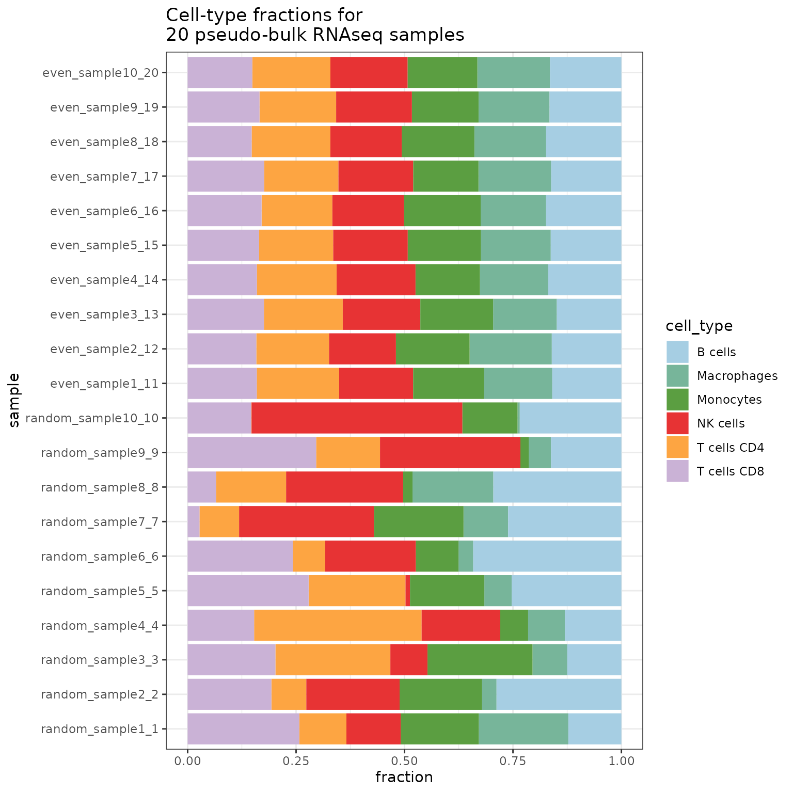

Getting started with the pseudo-bulk simulator R package
Alexander Dietrich
simulator_documentation.RmdInstallation
To install the package, run this: (Since it is a private repository, you currently need an authentication token for this repository.)
install.packages("devtools")
devtools::install_github("omnideconv/SimBu") #add auth_token=XXX to download from private repositoryIntroduction
Cell-type deconvolution is an important analysis-step while processing bulk RNA-seq experiments and many tools exist to tackle this issue. Though the user lacks a good comparison between those tools and when one might be more beneficial than others.
The goal of SimBu is to create benchmark datasets, where pseudo bulk samples with predefined cell-type fractions can be simulated using expression data from single-cell RNAseq experiments.
Getting started
This chapter covers all you need to know to quickly simulate some pseudo-bulk samples!
This package can simulate samples from local or public data. This vignette will work with artificially generated data as it serves as an overview for the features implemented in SimBu. For the public data integration using sfaira (Fischer et al. 2020), please refer to the “Public Data Integration” vignette.
We will create some toy data to use for our simulations; two matrices with 300 cells each and 1000 genes/features. One represents raw count data, while the other matrix represents scaled TPM-like data. We will assign these cells to some immune cell types.
counts <- Matrix::Matrix(matrix(rpois(3e5, 5), ncol=300), sparse = T)
tpm <- Matrix::Matrix(matrix(rpois(3e5, 5), ncol=300), sparse = T)
tpm <- tpm / sum(tpm) *1e6
colnames(counts) <- paste0("cell_",rep(1:300))
colnames(tpm) <- paste0("cell_",rep(1:300))
rownames(counts) <- paste0("gene_",rep(1:1000))
rownames(tpm) <- paste0("gene_",rep(1:1000))
annotation <- data.frame("ID"=paste0("cell_",rep(1:300)),
"cell_type"=c(rep("T cells CD4",50),
rep("T cells CD8",50),
rep("Macrophages",100),
rep("NK cells",10),
rep("B cells",70),
rep("Monocytes",20)))Creating a dataset
SimBu uses the SummarizedExperiment class as storage for count data as well as annotation data. Currently it is possible to store two matrices at the same time: raw counts and TPM-like data (this can also be some other scaled count matrix, such as RPKM, but we recommend to use TPMs). These two matrices have to have the same dimensions and have to contain the same genes and cells. Providing the raw count data is mandatory!
SimBu scales the matrix that is added via the tpm_matrix slot by default to 1e6 per cell, if you do not want this, you can switch it off by setting the scale_tpm parameter to FALSE. Additionally, the cell type annotation of the cells has to be given in a dataframe, which has to include the two columns ID and cell_type. If additional columns from this annotation should be transferred to the dataset, simply give the names of them in the additional_cols parameter.
To generate a dataset that can be used in SimBu, you can use the dataset() method; other methods exist as well, which are covered in the “Inputs & Outputs” vignette.
ds <- SimBu::dataset(annotation = annotation,
count_matrix = counts,
tpm_matrix = tpm,
name = "test_dataset")
#> [1] "Filtering genes..."
#> Warning in generate_summarized_experiment(annotation = annotation, count_matrix
#> = count_matrix, : Warning: Some cells in your TPM matrix are not scaled between
#> 7e5 and 1e6, as it would be expected for TPM data.
#> [1] "Created dataset."SimBu offers basic filtering options for your dataset, which you can apply during dataset generation:
filter_genes: if TRUE, genes which have expression values of 0 in all cells will be removed.
variance_cutoff: remove all genes with a expression variance below the chosen cutoff.
type_abundance_cutoff: remove all cells, which belong to a cell type that appears less the the given amount.
Simulate pseudo bulk datasets
We are now ready to simulate the first pseudo bulk samples with the created dataset:
simulation <- SimBu::simulate_bulk(data = ds,
scenario = "random",
scaling_factor = "NONE",
ncells=1000,
nsamples = 20,
ncores = 4)
#> [1] "Finished simulation."ncells sets the number of cells in each sample, while nsamples sets the total amount of simulated samples.
If you want to simulate a specific sequencing depth in your simulations, you can use the total_read_counts parameter to do so. Note that this parameter is only applied on the counts matrix (if supplied), as TPMs will be scaled to 1e6 by default.
SimBu can add mRNA bias by using different scaling factors to the simulations using the scaling_factor parameter. A detailed explanation can be found in the “Scaling factor” vignette.
Currently there are 6 scenarios implemented in the package:
uniform: this creates samples, where all existing cell-types in the dataset appear in the same proportions. So using a dataset with 3 cell-types, this will simulate samples, where all cell-type fractions are 1/3. In order to still have a slight variation between cell type fractions, you can increase the
balance_uniform_mirror_scenarioparameter (default to 0.01). Setting it to 0 will generate simulations with exactly the same cell type fractions.random: this scenario will create random cell type fractions using all present types for each sample. The random sampling is based on the uniform distribution.
mirror_db: this scenario will mirror the exact fractions of cell types which are present in the provided dataset. If it consists of 20% T cells, 30% B cells and 50% NK cells, all simulated samples will mirror these fractions. Similar to the uniform scenario, you can add a small variation to these fractions with the
balance_uniform_mirror_scenarioparameter.spike-in: here you need to set two additional parameters for the
simulate_bulk()function:spike_in_cell_typesets the cell-type you want to be over-representing andspike_in_amountsets the fraction of this cell-type. You could for example useB-celland0.5to create samples, where 50% are B-cells and the rest is filled randomly with other cell-types.unique: this creates simulations of only one single cell-type. You have to provide the name of this cell-type with the
unique_cell_typeparameter.custom: here you are able to create your own set of cell-type fractions. When using this scenario, you additionally need to provide a dataframe in the
custom_scenario_dataparameter, where each row represents one sample (therefore the number of rows need to match thensamplesparameter). Each column has to represent one cell-type, which also occurs in the dataset and describes the fraction of this cell-type in a sample. The fractions per sample need to sum up to 1. An example can be seen here:
unique_scenario_dataframe <- data.frame(
"B cells" = c(0.2, 0.1, 0.5, 0.3),
"T cells" = c(0.3, 0.8, 0.2, 0.5),
"NK cells" = c(0.5, 0.1, 0.3, 0.2),
row.names = c("sample1","sample2","sample3","sample4")
)
unique_scenario_dataframe
#> B.cells T.cells NK.cells
#> sample1 0.2 0.3 0.5
#> sample2 0.1 0.8 0.1
#> sample3 0.5 0.2 0.3
#> sample4 0.3 0.5 0.2Results
The simulation object contains three named entries:
-
bulk: a SummarizedExperiment object with the pseudo-bulk dataset(s) stored in theassays. They can be accessed like this:
assays(simulation$bulk)[["bulk_counts"]]
assays(simulation$bulk)[["bulk_tpm"]]If only a single matrix was given to the dataset initially, only one assay is filled.
cell_fractions: a table where rows represent the simulated samples and columns represent the different simulated cell-types. The entries in the table store the specific cell-type fraction per sample.scaling_vector: a named list, with the used scaling value for each cell from the single cell dataset.
Finally here is a boxplot of the resulting simulation:
SimBu::plot_simulation(simulation = simulation)
More features
Simulate using a whitelist (and blacklist) of cell-types
Sometimes, you are only interested in specific cell-types (for example T cells), but the dataset you are using has too many other cell-types; you can handle this issue during simulation using the whitelist parameter:
simulation <- SimBu::simulate_bulk(data = ds,
scenario = "random",
scaling_factor = "NONE",
ncells=1000,
nsamples = 20,
ncores = 4,
whitelist = c("T cells CD4", "T cells CD8"))
#> [1] "Finished simulation."
plot_simulation(simulation = simulation)
In the same way, you can also provide a blacklist parameter, where you name the cell-types you don’t want to be included in your simulation.